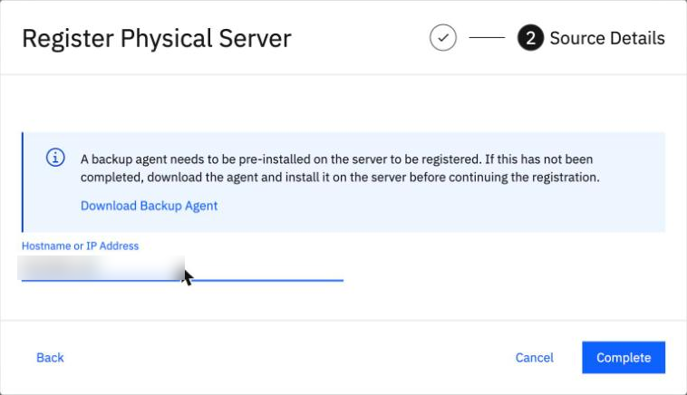
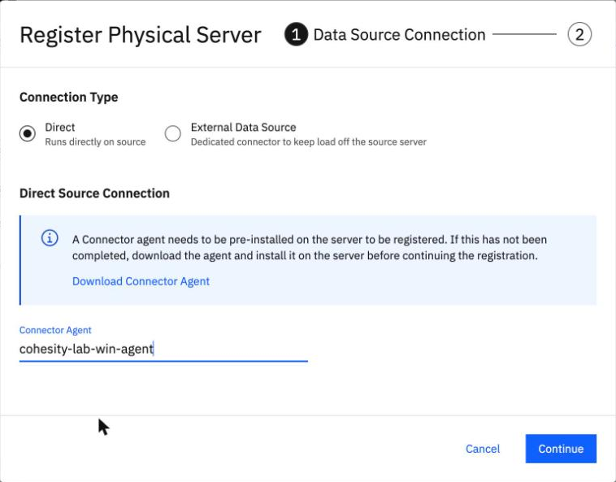

Register a source
By the end you can register a Linux or Windows server as a source by either route, say what to expect afterwards, and read the error that a connector still joining gives.
Northgate Freight is a made-up company. Its connectors are up, and now it tells BRS which servers to back up: the Linux server ng-app-01 and the Windows server ng-win-01.
Every number, message and screen in this unit comes from runs in our lab on 7 October and 8 November 2026. Server names, addresses and connection names were changed to made-up Northgate values; server addresses are blurred in the screenshots.
One register step, two routes
Registering a source needs the server's address, its host type (kLinux or kWindows) and the connection that reaches it. The command is the same for both routes. In the console, Connection Type chooses the route.
Which Connection Type do you choose for a server that has a Connector Agent?
Show the answer
Connection Type starts at Direct, which is the Connector Agent. For a connector server you choose External Data Source and pick the connection.
The register command needs a connection ID. Which command lists it for a server with a Connector Agent?
Show the answer
The ID comes from data-source-connection list for a connector server, and from connector-agent list for a Connector Agent. In our lab, data-source-connection list printed {} for the Connector Agent's connection.
What do you see after you register?
Northgate registers its Linux server from the command line, and its Windows server in the console through its Connector Agent.
The register command returns at once. What does it show about the source?
Show the answer
It returns the source ID and authenticationStatus "Pending". In one run in our lab, on 7 October 2026, the status was "Finished" 6 seconds later.
In the console on 8 November 2026, Northgate registers the Windows server and clicks Complete. What did the page show?
Show the answer
In our lab the Windows source showed "Registering" and then 99.3 GiB after a reload about 20 seconds later (13:48 UTC). The Linux server on 8 November showed "Updated Physical server successfully" at the first try, and 99.9 GiB.
Cannot find a valid connector
On 7 October 2026 Northgate built a new connector server, claimed it, and registered a Linux server through it straight after. This is what came back.
$ ibmcloud backup-recovery protection-source register --environment kPhysical ... FAILED: "Cannot find a valid connector for tenant ... network_realm ..."
What went wrong?
Show the answer
Our reading: the connector had not finished joining. The registration was tried at 08:41:44 UTC.
What did Northgate do, and how did it end?
Show the answer
The same command worked at 08:43:51 UTC, about 2 minutes later. To see that a connector has joined, list it: data-source-connector list shows its connectivityStatus; isConnected true means it has.
Watch for this. It happened once, with a new connector server. With the Connector Agent the first registration worked at the first try (10:44:03 UTC the same day). On 8 November 2026 the connector server had been joined for two hours, and registration worked at the first try.
Register a Linux and a Windows server
These screens come from the BRS console in our lab. Click where you would click. After two misses the right place is marked.

Northgate chose External Data Source, for the connector server. Where does it pick the connection?
Show where
Right: the Data Source Connection field. You reach this dialog with Data Protection > Sources, Register Source, Physical, Start Registration. Click Continue when the connection is picked.

Step 2 of the dialog. Where do you type the server's address?
Show where
Right: Hostname or IP Address. Then click Complete.

For the Windows server Northgate leaves Direct chosen. Where does it pick the agent?
Show where
Right: the Connector Agent field. Pick the agent, click Continue, type the server's address and click Complete.

The Linux source is registered. In the server's row, where does the console say it is not yet protected?
Show where
Right: the Protected column says No, with 0 Bytes protected. The row shows 99.9 GiB total size.
Three questions
Review from unit 2.2. Which platform names does the Connector Agent download API accept?
Show the answer
Any other name gave HTTP 400: "platform in path should be one of [kLinux kWindows]".
Registering a source through a new connector server fails with "Cannot find a valid connector". What do you do?
Show the answer
In our lab the same command worked about 2 minutes later.
Which host type do you give when you register the Windows server?
Show the answer
The host type is kWindows for Windows and kLinux for Linux. The physical type, kHost, is a separate setting.
You can register a source
Registration needs an address, a host type and a connection: Direct for a Connector Agent, External Data Source for a connector server. A new connector server may answer "Cannot find a valid connector" at first. Wait, then register again.